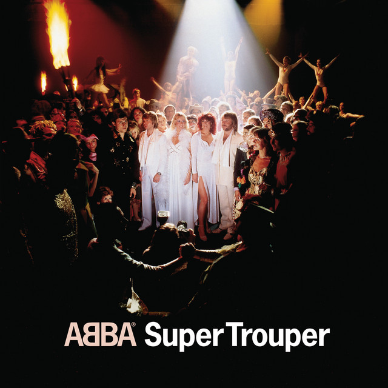
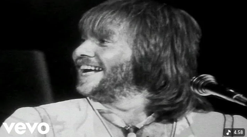

Apa itu The Winner Takes It All?
The Winner Takes It All adalah lagu balada pop ikonik dari grup Lagu asal Swedia, ABBA, yang dirilis pada 21 Juli 1980 sebagai singel utama album Super Trouper. Lagu ini ditulis oleh Björn Ulvaeus dan Benny Andersson, dengan vokal utama dibawakan oleh Agnetha Fältskog.
Di sini kita bahas tentang maksud dari lagu ini, penggunaan katanya yang sangat luar biasa dan mengapa tidak diperuntukkan untuk seorang pemenang.
The Winner Takes It All

Lagu ini ditulis oleh Benny Andersson dan Björn Ulvaeus. Liriknya menggambarkan kepedihan seseorang yang harus menerima kenyataan bahwa pasangannya berpaling kepada orang lain. Meski terinspirasi dari rasa sakit hati akibat perceraiannya dengan Agnetha pada tahun 1979-1980, Björn menegaskan bahwa liriknya tidak sepenuhnya biografis karena dalam perpisahan mereka tidak ada pihak yang benar-benar menang atau kalah.
Lagu ini sebenarnya memiliki nama awal yaitu "The Story of My Life" sebelum akhirnya diubah menjadi "The Winner Takes It All"
Lirik
Baca bait pertama dari lagu The Winner Takes It All:
I don't wanna talkOpening ini sangatlah dingin karena menjelaskan bahwa sang narator tidak ingin membicarakan apa yang telah terjadi, karena semua telah menjadi sejarah.
I've played all my cardsBagian ini adalah metafora yang sangat dalam untuk menjelaskan bahwa "Aku telah melakukan semuanya". Ia mungkin sudah mencoba, memberi kesempatan, mempertaruhkan dirinya, hingga akhirnya "Tidak ada kartu yang tersisa". Bahkan lanjutannya yaitu:
No more ace to playSangat menjelaskan bahwa tidak ada lagi kemenangan karena semua kartu terbaik sekalipun telah habis. Intinya, Memberi yang terbaik tetapi tetap kalah. Familiar dengan kejadian di dunia nyata?
The Winner Takes It All
The loser has to Fall
Beside the victory
That's her destinyKalimat ini menjelaskan bahwa pemenang akan mendapatkan semuanya, dan pecundang kehilangan semuanya. Namun, disamping semua kemenangan, sang narator tidak bisa berbuat apa-apa karena itu sudah menjadi takdirnya. Takdir untuk kalah.
But I was a fool
Playing by the rulesBagian ini menjelaskan bahwa sang narator terlalu bodoh untuk mengikuti aturan permainan. Permainan di sini hanyalah sebuah metafora yaitu hubungan mereka. Sang lawan bisa saja curang, tetapi bagian selanjutnya:
The gods may throw a diceIni memperkuat bahwa bukan ia yang gagal karena mengikuti peraturan, tetapi karena memang takdir yang tidak memperbolehkannya untuk menang. Sebenarnya metafora ini agak ambigu. Gimana tidak, melempar dadu memiliki kemungkinan 1 banding 6, lalu mendapatkan nilai yang diinginkan bukan dibuat karena kita kurang berusaha, tetapi karena takdir yang memang mengarahkan kita untuk mendapatkan nilai yang tidak diinginkan.
Secara garis besar, bagian dadu yang tidak diinginkan pada lagu ini adalah perceraiannya.
It's simple and It's plain
Why should i complain?Ini adalah bagian refleksi. Jika peraturan memang sesimpel itu, lalu kenapa ia harus komplain? ada yang namanya penolakan. Manusia memiliki mekanisme untuk menolak kejadian yang tidak diinginkan, tetapi karena memang sudah terjadi, apakah bisa kembali ke masa lalu? Bisakah kembali untuk memperbaikinya? Nah, makanya bagian ini menjelaskan untuk terus maju dan berkaca diri dari semua hal yang telah terjadi entah itu baik ataupun buruk.
Baca Juga: The Bird Song: Menyelami Makna Lagu dan Teori Musik di Baliknya
Bukan untuk pemenang
Ketika kau mendengar lagu ini, mungkin kau hanya menganggap bahwa lagu ini digunakan untuk menunjukkan betapa superiornya seorang pemenang. Tetapi sebenarnya, lagu ini adalah refleksi bagi orang-orang yang gagal.
Lagu ini menggunakan perceraian sebagai interpretasi kegagalan, tetapi apakah hanya itu kegagalan? Hidup manusia diisi dengan kegagalan yang lebih banyak dari kemenangan yang didapat. Ajang lomba, pertemanan, percintaan, dan lainnya, itu semua melekat dalam hidup kita. Tetapi ada satu hal yang sangat penting, kita terus berusaha untuk mendapat kemenangan setiap saat dan tidak memberikan kepuasan, sementara satu kegagalan bisa menghancurkan semua yang kita menangkan secara instan.
Jangan pernah menyerah sekalipun mungkin kegagalan adalah takdir kita, karena hanya dengan kegagalan, semakin cepat kita frustrasi, semakin cepat frustrasi, maka semakin sadar juga bahwa kita belum mengeluarkan kemampuan maksimal bagi diri kita.
Ada satu nasihat dari seseorang yang selalu kuingat sampai sekarang, yaitu "Seseorang dengan bakat tanpa kekalahan hanyalah pisau karatan tanpa batu asahan". Beh, kata-kata hari ini gak tuh. Intinya adalah kekalahan itu wajar, yang tidak wajar adalah membiarkan kekalahan melahap diri kita untuk melanjutkan perjuangan menuju kemenangan.
Kesimpulan
Lagu "The Winner Takes It All" mengajarkan kita untuk selalu berjuang, sepahit apa pun hidup, sekeji apa pun seseorang, sesuatu yang mengikat kita agar tidak maju hanyalah hama yang bisa dibuang jauh-jauh jika kita bersikap bodo amat. Kegagalan dalam percintaan menjadi salah satu contoh sederhana antara pemenang dan pecundang. Ingatlah satu hal, tidak ada pemenang ataupun pecundang, yang ada hanyalah pejuang.
Link Lagu.
